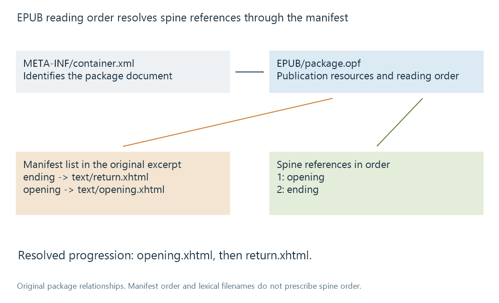

Electronic books and reading resources
An electronic book packages a publication’s text, layout and resources while catalogue identity, reading order and reader-generated pages remain distinct.
An electronic book is a publication represented by digital resources. Its title, author and edition describe the publication. The file format determines how text, images, styling and reading order are packaged. A reading system turns that information into the pages or views a person sees.
That last step explains why a book's identity can remain the same while its displayed page count changes.
Reflow and fixed presentation
A reflowable publication allows text to adapt to the reading area and chosen font. Increasing the font size fits fewer words into each screenful; narrowing the reading area changes line breaks.
A fixed-layout publication preserves an intended page composition. Enlarging it normally changes the scale or viewport rather than repaginating its text into another sequence.
| Observation | What it can mean |
|---|---|
| Page 42 becomes page 57 after a font change | Reader-generated pagination changed |
| The same chapter and passage remain visible | Content location can remain stable |
| A printed page number appears in the text or navigation | The publication has supplied another numbering context |
| A fixed page is cropped or zoomed | Viewport and scale changed, not the publication's reading sequence |
A screen page number is therefore not a universal identifier for a passage in every reader. It needs its pagination context.
EPUB packages relationships, not just files
EPUB 3 uses web-based content and a defined container/package structure. An original illustrative resource layout is:
mimetype
META-INF/container.xml
EPUB/package.opf
EPUB/nav.xhtml
EPUB/text/opening.xhtml
EPUB/text/return.xhtml
EPUB/styles/book.css
EPUB/images/cover.jpg
The container information identifies the package document. The package describes publication resources and default reading order. Individual content documents reference styling and other resources.

A random ZIP containing HTML is not automatically a conforming EPUB. EPUB imposes additional structure and packaging requirements, including the special mimetype resource and its storage rules.
The manifest and spine answer different questions
The following original fragment focuses on two package relationships. Surrounding publication metadata and other required resources are omitted:
<package xmlns="http://www.idpf.org/2007/opf"
version="3.0" unique-identifier="book-id">
<manifest>
<item id="ending" href="text/return.xhtml"
media-type="application/xhtml+xml" />
<item id="opening" href="text/opening.xhtml"
media-type="application/xhtml+xml" />
</manifest>
<spine>
<itemref idref="opening" />
<itemref idref="ending" />
</spine>
</package>
The manifest lists resources by identity. The spine references them in the intended order: opening, then ending. The fact that the manifest lists ending first does not prescribe that as the reading sequence.
Likewise, sorting filenames in the archive is not a substitute for resolving the spine. Navigation can provide a chapter menu, while the spine defines the default progression through content. Those functions can agree without being identical.
The excerpt is well-formed XML, not a complete valid EPUB package. A package that references a missing content document can remain syntactically readable while failing to resolve its publication resources.
Locations should refer to content
A chapter/document reference can locate a broad part of the publication. A structural fragment or a scheme such as EPUB CFI can refer more precisely to content within it.
Such a reference is more useful for carrying a reading position across a font or viewport change than an unqualified screen-page number. It still belongs to a particular document structure and publication context. Revising the text can require correspondence or recovery rather than blindly reusing an old offset.
ISBN supplies edition/format identity in a publication system. It does not encode a paragraph position or determine how a reader paginates that edition.
Catalogue, container processor and reader
A library can catalogue a book file, extract descriptive metadata or offer the resource for use elsewhere. A reading system has additional work: interpret its content documents, layout, navigation and supported interactive features.
The EPUB reading-system specification explicitly distinguishes container processing from complete reading-system behavior. This helps explain why recognising an EPUB is a different capability from rendering its full publication.
Emby's Book Naming guide lists recognised electronic-book formats and library conventions. Format recognition should be understood in that resource/catalogue scope; available reading behavior depends on the consuming app or workflow.
For the original package fragment, a reader resolves the opening content before the ending content. The same publication can then produce different screen pages in a narrow phone view and a wide desktop view while preserving that reading order.
See Also
- Audiobook editions and narrated versions
- Comic book archives: CBZ and CBR
- Media item identity
- Unicode metadata